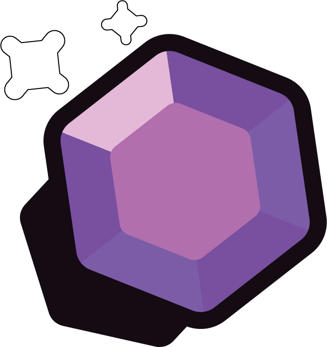
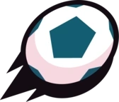
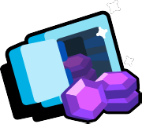
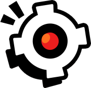
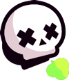
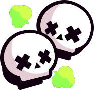
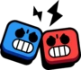

Modos de Juego
| Modo | Descripción |
|---|---|
| Atrapagemas |
Ver descripción e imagenAtrapa las gemas que salen de la mina ubicada en el centro del mapa. También podrás recoger las que dejen atrás los jugadores que sean eliminados. ¡Quien tenga diez gemas en su poder hasta el final de la cuenta atrás gana el combate!  |
| Balón Brawl |
Ver descripción e imagenBalón Brawl es un modo de juego de Brawl Stars que consiste en marcar 2 goles en la portería del rival. Si no se han marcado 2 goles del mismo equipo antes de que se acabe el tiempo, ganará el que haya marcado más o en caso de empate habrá un tiempo extra de un minuto para marcar el último gol.  |
| Caza estelar |
Ver descripción e imagenDerrota a los jugadores del equipo contrario para obtener estrellas para tu equipo. Cada vez que derrotes a un jugador, conseguirás una estrella. Podrás tener hasta 7 estrellas. ¡Que no te las quiten! |
| Atraco |
Ver descripción e imagenProtege la valiosa caja fuerte mientras intentas destruir la del equipo contrario. El primer equipo que logre destrozar la caja fuerte del enemigo gana el combate. Si el tiempo se acaba, ganará el equipo que haya causado más daño a la caja fuerte del equipo contrario.  |
| Noqueo |
Ver descripción e imagen¡Derrota al equipo rival al mejor de tres rondas en noqueo! Ten cuidado, porque los brawlers derrotados no podrán seguir luchando durante el resto de cada ronda. Al cabo de un tiempo, se empezarán a esparcir nubes venenosas por el mapa.  |
| Supervivencia |
Ver descripción e imagenLucha en solitario o por parejas en la arena de supervivencia. Ganará quien sobreviva hasta el final.  |
| Supervivencia Dúo |
Ver descripción e imagenLucha en solitario o por parejas en la arena de supervivencia. Ganará quien sobreviva hasta el final.  |
| Duelos |
Ver descripción e imagenForma un equipo de 3 brawlers para luchar contra un equipo rival en un formato de duelo por eliminación. Cada ronda es una batalla 1 contra 1 y termina cuando un brawler es derrotado.  |